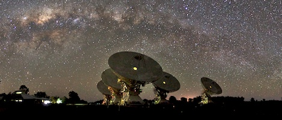
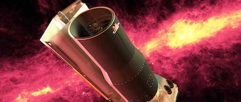

Image Credit: Emil Lenc

Radio Images
Most of the radio data in Radio Galaxy Zoo comes from the Faint Images of the Radio Sky at Twenty-Centimeters (FIRST), a deep survey which covers more than 10,000 square degrees. This is about one quarter of the entire sky! The data were taken with the Very Large Array (VLA), a 27-dish telescope in New Mexico, USA (and made famous in the film Contact). The images were taken between 1993 and 2011. About 175,000 total images in Radio Galaxy Zoo come from FIRST; you're helping us match these jets to their host galaxies by using images from the infrared WISE satellite. →
Additional radio data comes from the Australia Telescope Large Area Survey (ATLAS), a deep radio survey of six square degrees of the sky (about 30 times the size of the full Moon). This field contains about 6000 sources. The data were taken with the Australia Telescope Compact Array (ATCA) in rural New South Wales. The images were taken between 2006 and 2011. With only 6000 sources, we can simultaneously have experts examine these sources by eye AND compare them to results from Radio Galaxy Zoo volunteers. We'll combine these to develop and refine our techniques for the upcoming, larger Evolutionary Map of the Universe (EMU) and MeerKAT-MIGHTEE surveys.
EMU and MIGHTEE will be performed with the newly constructed Australian SKA Pathfinder (ASKAP) telescope in Western Australia and the MeerKAT telescope in South Africa. They will discover about 100 million radio sources, increasing our knowledge of the radio sky by almost a factor of 50! Even more importantly, they will probe far more deeply than other telescopes, giving us millions of examples of types of galaxies of which only a few hundred are currently known.
The VLA is operated by NRAO in the United States. Both ATCA and ASKAP are operated by CSIRO in Australia. MeerKAT is operated by SKA South Africa.
Image Credit: NASA/JPL-Caltech

Infrared Images
Most of infrared images that you're using to identify the host galaxies of black holes come from the Wide-Field Infrared Survey Explorer (WISE), an orbiting telescope which was operated by NASA from 2009–2011. WISE took images of the entire sky at four infrared wavelengths: 3.4, 4,6, 12, and 22 micrometers. The images in Radio Galaxy Zoo come from the 3.4 micrometer band; these means that the galaxies we're looking at emit their light as a combination of cool stars, warm dust that's been heated by starlight, and emission from a supermassive black hole. The 175,000 WISE images have been matched to FIRST data from the VLA, and cover most of the Northern and Southern Galactic Cap regions.
Some additional infrared images come from the Spitzer Space Telescope, an infrared observatory launched by NASA in 2003. It studies objects ranging from our own Solar System to the distant reaches of the Universe. In the early days of the Spitzer mission, the telescope was cryogenically cooled so that its three instruments (two cameras and a spectrograph) could observe the Universe at wavelengths from 3 to 180 micrometers. After its helium supply was exhausted in 2009, the telescope has continued to operate its IRAC camera in "Warm Mode", which it can do without the need for cryogenics.
The Spitzer infrared images you see in Radio Galaxy Zoo were taken as part of a program in this warm mode, called the Spitzer Wide-Area Infrared Extragalactic Survey (SWIRE). These were taken with the IRAC camera at a wavelength of 3.6 micrometers. The observed wavelength is similar to the WISE images, but have a higher resolution and sensitivity (in part because Spitzer's mirror is bigger than WISE's). There are about 6,000 images from this survey in Radio Galaxy Zoo, each of which are matched to radio data from ATLAS.
Spitzer and WISE are both operated by NASA.


{kind=link}